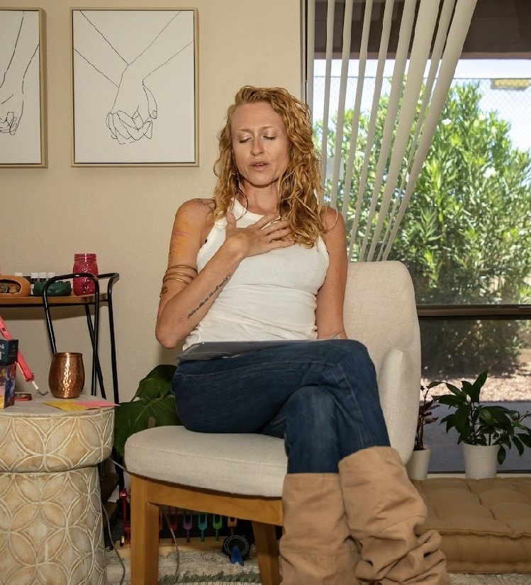
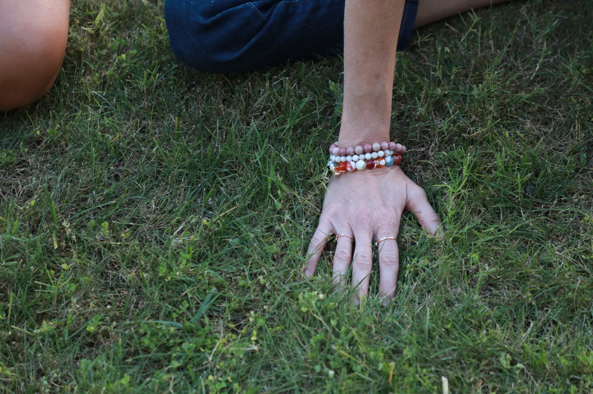
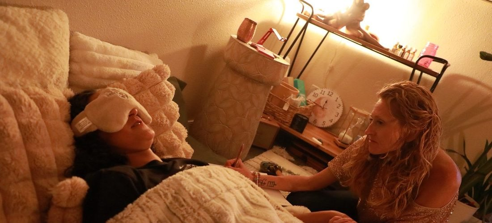

Trauma and PTSD
Single events and the long slow kind, including what happened before you had words for it.
Somatic Therapy · Mesa, AZ
Body-based, nervous-system-led work with Alicia Wright, LCSW. In person in Mesa, or by secure telehealth across Arizona. No touch involved.
Welcome
You've told the story. You understand where it came from and why you react the way you do. And your shoulders still climb toward your ears when someone raises their voice, your stomach still drops at a certain tone in a text, and you still go somewhere far away in the middle of a hard conversation. Insight lives in language. What you're describing lives somewhere language never reached. Somatic therapy works in that second place.
What We Do

Understanding it and being free of it turn out to be two different jobs.

"We slow down at the moment something lands, and we ask the body what it noticed."
Somatic therapy is talk therapy that also pays attention to the body. You sit in a chair, we have a real conversation, and when something lands we slow down and check what happened physically. A tightening. A held breath. Heat in the face. The urge to get up and leave the room. We stay with that long enough for it to move, then come back to the words.
Underneath it, the idea is simple. A response your body started and never got to finish stays queued in the nervous system, and it keeps firing at things that only resemble the original moment. Giving it somewhere to go is what lets it settle.
Noticing sensation as it happens, in language specific enough to work with.
Small pieces at a time, so you stay present instead of flooding.
Tools that settle the body in the room, and outside it.
Letting a stuck response finish so it stops running in the background.

It is not massage. Nothing here involves touch. The work happens through your own attention, guided by conversation.
It is not reliving your trauma. Going back into the worst of it at full volume is not treatment, it is just the thing happening again. We work in small pieces with regulation on either side, and you can stop at any point.
It is not a replacement for talking. Most people here get both in the same hour. The body work is what makes the insight stick instead of staying a thing you know and cannot use.
It is not only for capital-T trauma. Chronic stress, burnout, grief, a body that will not relax, and the low hum of never quite feeling safe all respond to the same work.
Different presentations, one nervous system that never got to stand down.
Single events and the long slow kind, including what happened before you had words for it.
Anxiety is physical before it is verbal, which is exactly why body-based work reaches it.
Going blank, floating off, feeling nothing at all. Freeze is a nervous system state, not a character flaw.
The jaw, the shoulders, the gut. Held patterns that have outlived whatever they were bracing against.
Living from the neck up. Not knowing what you feel, or whether you are hungry, tired, or done.
When your kid's meltdown hits something older in you and the reaction arrives before the thought.

Alicia is a Licensed Clinical Social Worker with a Master of Social Work and a second master's in Human Services focused on crisis response and trauma. She is EMDR trained, a certified ketamine-assisted psychotherapy provider, a certified tantra practitioner, yoga nidra certified, and a certified kundalini dance teacher.
That last stretch of the list is the part that matters here. Body-based practice is how Alicia was trained to work, and it is how she works in the room.
She also has her own history with this. She started doing this work because she needed it first, which is a different thing from having read about it.
A free consultation. You tell us what has and hasn't worked, and we talk through whether this is the right next thing for you.
Schedule Free ConsultationYou stay in your chair, and you stay in charge the whole way through.
It starts as an ordinary conversation about what is going on. Nothing about the opening of a session feels unusual.
When something lands, we pause and check what happened in your body. Where it is, what it feels like, whether it wants to move. Then we stay with it while it shifts.
Back to words, so it makes sense, plus something you can use on your own when it comes up on a Tuesday afternoon.
Investment
Rates vary by therapist based on experience and specialization. Out-of-network with superbills for possible PPO reimbursement. HSA and FSA accepted.
Format
2160 E Brown Rd, Suite 3 in Mesa, or secure video anywhere in Arizona. Body-based work carries over video better than people expect.
Pace
Weekly, every other week, or longer intensive sessions when the work needs room. You set the pace and you can stop at any point.
She taught me coping skills, gave me guided steps to consider making in my life, and hope for the future. I can now regulate my emotions versus numbing my feelings, and I have joy again, and a life that I embrace in the present moment while dreaming of an even better future.
Somatic therapy is talk therapy that also works with the body. Alongside the conversation you track physical sensation, breath, posture, and impulse, because the nervous system holds an experience even when the story has already been told many times.
No. Nothing here requires touch. The work is done through your own attention to sensation, breath, and movement, guided by conversation. Somatic therapy is not massage.
Talk therapy works with what you can put into words. Somatic therapy adds what your body is doing while you say it, which is often where the pattern is actually held. Most clients here get both in the same session.
Yes. Tracking sensation, breath, and regulation all work over secure video, and being in your own space can make it easier to settle. Telehealth is available anywhere in Arizona.
A normal conversation, with pauses. When something lands, we slow down and check what happened in your body, stay with it long enough for it to shift, and then come back to the talking.
Sessions range from $85 to $185 depending on which therapist you see. We are out-of-network and provide superbills you can submit for possible PPO reimbursement. HSA and FSA are accepted.
No. Somatic work is paced deliberately so you stay inside your window of tolerance. We work in small pieces with regulation on either side, and you can stop at any point.


The first conversation is free. No commitment, no script, just a chance to see if we're the right fit.